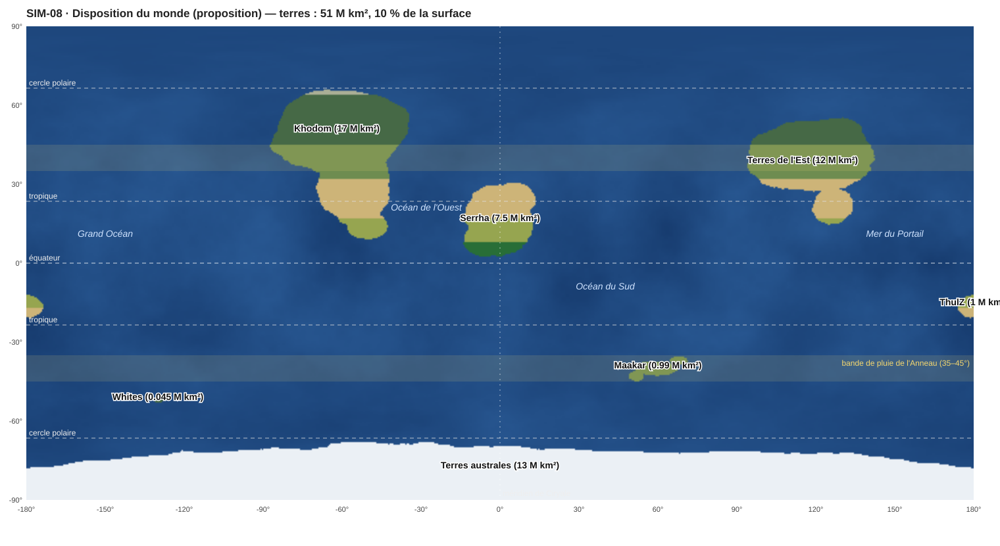

PLA-008 — La disposition du monde
« Tu peux le faire comme tu le sens. Je t'avais envoyé des informations sur la géographie, je ne pense même pas que ce soit logique. » La disposition des continents et des océans est donc décidée ici, à partir du canon. Elle servira de base à l'Atlas.

1. Les règles qui fixent la carte
- La planète : un rayon de 6 430 km, une surface de ≈ 520 M km² (SIM-01 Système stellaire).
- Les terres connues font ≈ 26 M km², soit 5 % (PLA-005 Géographie corrigée). Le climat a été simulé avec 90 % d'océans (SIM-02 Climat). Il y a donc ≈ 25 M km² de terres inconnues, pour un total d'environ 10 % de terres.
- Sera s'étend de 3°N à 30°N : ses royaumes ont été placés par leur saison des pluies. Le vent sec vient du nord, la mousson du sud-ouest, et Arhamya commerce par la mer. Sera est donc une île-continent de l'hémisphère nord, entourée d'océan (SIM-02, PLA-007 Climats régionaux).
- Khodom s'étend de 10°N à 70°N, des jungles à la toundra, avec un Désert de Brume sur sa côte ouest (PLA-007).
- Les cyclones nés au large de Sera partent vers l'ouest et doivent frapper une côte : celle de Khodom.
- Maakar est sous la bande de pluie de l'Anneau, entre 35° et 45° de latitude (PLA-007).
2. Les terres
| Terre | Surface | Position | Pourquoi là |
|---|---|---|---|
| Sera | 7,5 M km² | 3°N–30°N, centrée sur la longitude 0 | Placée par SIM-02. Le méridien zéro passe par Siriale, la cité neutre des forges : c'est là que se fixent les mesures communes |
| Khodom | 16,8 M km² | 10°N–70°N, ≈ 40° à 85° de longitude ouest | De l'autre côté de l'Océan de l'Ouest (≈ 4 000 km), comme les Amériques face à l'Afrique. Les cyclones nés à Sera ravagent sa côte est ; les pirates de ses côtes parlent le Mhyros, un créole de Logar et de Khodran (CIV-002 Les langues) |
| Maakar | 1,0 M km² | ≈ 35°–45°S (corrigé : C-37), 44° à 74°E | Un archipel en arc, comme le Japon (auteur, 2026-11-03), long de ≈ 3 300 km, dans la bande de pluie de l'Anneau et isolé au milieu de l'Océan du Sud. Tout l'archipel flotte à 19–30 km, au-dessus du premier ciel : PLA-009 Maakar, l'archipel et ses îles flottantes |
| Tawurt | 1,0 M km² | ≈ 16°S, longitude 180° | Aux antipodes exacts de Sera. Le Chaos qui fuit du portail se diffuse (SIM-05 Transport du Chaos) : les mortels prospèrent au point le plus éloigné du portail. On a mis les vivants le plus loin possible de la porte |
| Les Hejeti | 0,05 M km² | ≈ 52°S, 130°W | Un petit archipel froid et brumeux du Grand Océan, loin de tout. Le meilleur endroit au monde pour un peuple qui se cache |
| Les Terres de l'Est | ≈ 12 M km² | 20°N–50°N, 100° à 130°E | Inconnues, et sans aucun peuple (corrigé : C-226) : la dernière terre sauvage, celle des bêtes et des monstres. Personne de Sera ne l'a explorée. (corrigé : C-126, C-162 : l'empire magitech est Tamaati, et ses ruines sont sous Khal'daras.) |
| Les Terres australes | ≈ 13 M km² | Au-delà de 72°S | Un continent polaire sous la glace, comme l'Antarctique. Inconnu |
3. Les océans (noms fixés)
(corrigé : C-153) Les noms : Munesheni (Océan de l'Ouest), Museba (Océan du Sud), Weremu (Grand Océan), Mura (à l'est de Sera), la Mer de Tawurt (la Mer du Portail).
- L'Océan de l'Ouest, entre Sera et Khodom : la route des pirates et des cyclones.
- L'Océan du Sud, au sud de Sera et autour de Maakar.
- Le Grand Océan, l'immense hémisphère d'eau où se cachent les Hejeti.
- La Mer du Portail, autour de Tawurt.
4. Ce que ça donne pour l'histoire
- Le monde est un océan avec des îles. Avec 90 % d'eau, la mer est la vraie frontière : la marine, les cartes marines et les longues traversées comptent plus que les routes.
- L'Anneau tombe aussi sur Khodom. La bande de pluie nord (35°–45°N) traverse les steppes de Khodom. Le fer météoritique, l'« acier divin » (C-29), y tombe du ciel : les Lumas des steppes ont un métal que Sera doit acheter.
- Tawurt aux antipodes : aller au portail, c'est aller de l'autre côté du monde. Le voyage lui-même devient une épreuve.
- Deux continents inconnus laissent la place à des découvertes, des expéditions et des mystères.
5. Ce qui reste à faire
- Le relief (plaques, chaînes de montagnes, rift de Sera, plateau de Zun'khel), les fleuves et les côtes réalistes seront générés dans l'Atlas, par une simulation de plaques tectoniques. Cette carte n'est qu'une première disposition, aux surfaces exactes.
- Placer les royaumes dans Sera, et les tribus dans Khodom.
- Les noms des océans et des terres inconnues : à l'auteur. (corrigé : C-153 : les noms des océans sont fixés.)
Les Terres de l'Est : pourquoi personne n'y vit ni n'y va (C-226 ; la lecture de l'Atlas est une proposition)
Validé par l'auteur (2026-11-10, C-226) : « je valide, aucun peuple là-bas ».
Ce que montre l'Atlas (relevé sur 4 800 points) : un haut plateau froid et sec, comme le Tibet et le désert de Gobi réunis.
- Une altitude moyenne de 1 340 m, une température moyenne de 7 °C et 361 mm de pluie par an.
- 42 % de déserts chauds et froids, 25 % de toundra et de glace, 14 % de steppes, et à peine 10 % de terres tempérées.
- 17 % de territoires monstrueux, autant qu'à Sera.
Ce n'est pas la mer qui arrête Sera. Depuis Mereyeti, la traversée de l'océan Mura prend 38 à 55 jours selon la saison, presque sans cyclones, et le retour 66 jours (calcul des routes de mer, CIV-019 § 8). C'est plus long que pour Khodom (19 jours depuis Kemazo), mais pas impossible.
C'est la terre qui ne vaut pas le voyage (proposition) :
- il n'y a personne : pas de port, pas de marché, pas de captifs ni d'âmes à convertir. Rien à prendre que des bêtes ;
- le sol est pauvre : des déserts d'altitude, de la toundra, de la glace. Il n'y a ni le Fer du Souffle ni les terres de Khodom ;
- Khodom est trois fois plus près, plus riche et peuplé. Tout ce que Sera a d'ambition regarde vers l'ouest ;
- les rares navires qui ont touché ses côtes ont trouvé des steppes vides, des monstres et du froid. Ils ne sont pas revenus avec de quoi en armer d'autres.
Le plateau tibétain a une altitude moyenne d'environ 4 500 m, et le désert de Gobi reçoit moins de 200 mm de pluie par an. Ce sont parmi les terres les moins peuplées d'Asie : la densité y est de l'ordre de 2 habitants au km² au Tibet, contre plus de 100 dans les plaines de Chine (Yang et Tong, Tibetan Plateau, 2018).
Historique
- 2026-11-02 : création (carte blanche de l'auteur sur la géographie).
- 2026-11-10 : les Terres de l'Est, sans aucun peuple (C-226) ; la lecture de l'Atlas.